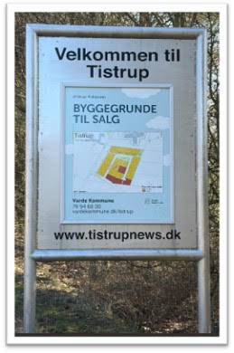
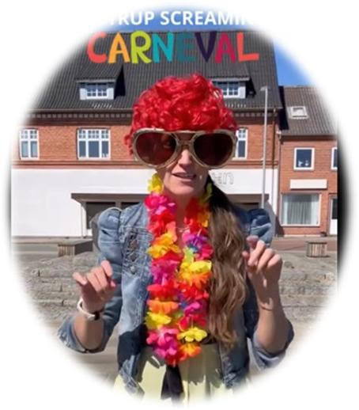
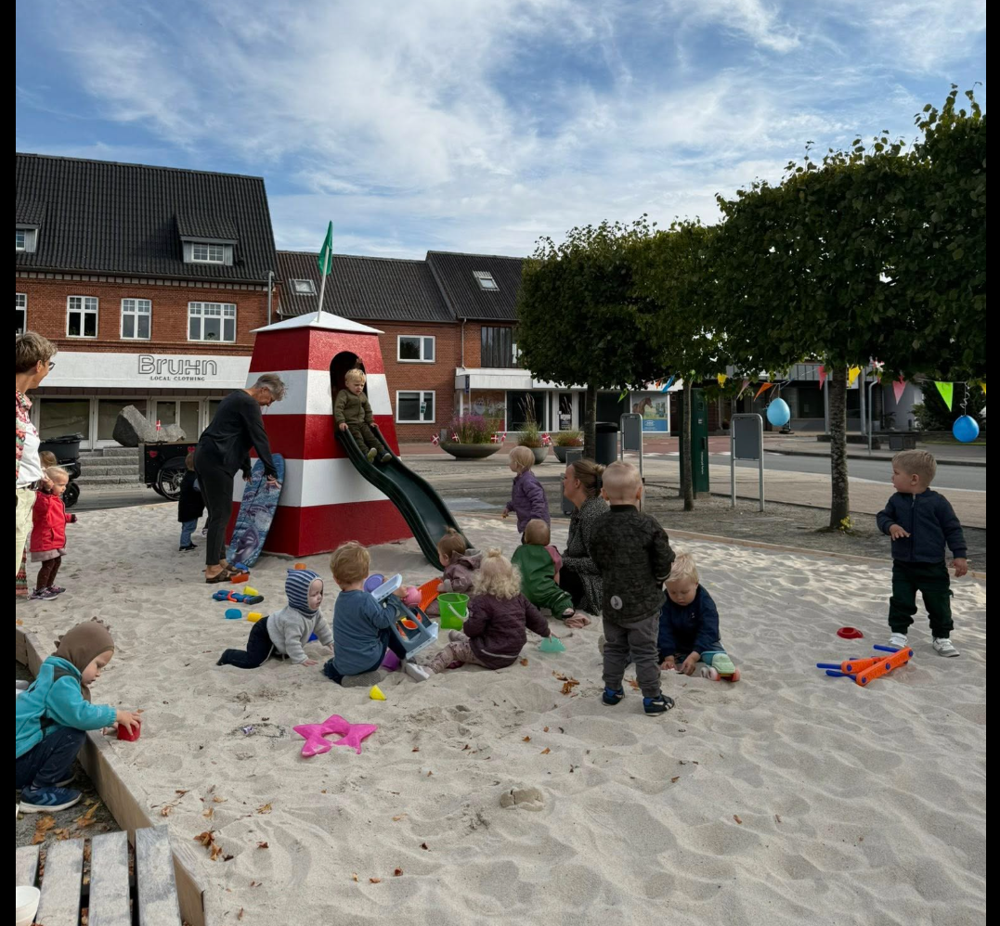

Vestjylland,
på sit bedste.
Tistrup er en levende stationsby i Varde Kommune. Cirka 1.400 indbyggere, stærkt fællesskab, grønt anlæg og aktivt erhvervsliv.

En by med alt det, der betyder noget.
Tistrup ligger midt i Varde Kommune – cirka halvvejs mellem Varde og Ølgod. Med ca. 1.400 indbyggere er vi en af de større landsbyer i Sydvestjylland, og vi har alt det, man har brug for i det daglige: Dagli'Brugsen, Trane Skole og Børneby, Hodde-Tistrup Hallen, plejecenter, kirke og et lille, aktivt handelsliv på torvet.
I 2025 fejrede vi byens 150-års jubilæum som stationsby med en stor Togfestival.

Byens grønne hjerte.
Tistrup Anlæg med søen, de hvide broer og legepladsen er det sted, man går tur, holder bryllup, fejrer Midsommer og lader børnene vokse op. Læringshytten samler foreninger og arrangementer året rundt.
Tæt på byen ligger By-skoven, Letbæk Mølle, Kraruplund – og fra 2026 den 820 hektar store Nørholm Vildmark (et rewildingprojekt under Hempel Fonden).

Det er en by, der passer på sig selv — gennem frivillige, foreninger og folk der gider gøre en forskel.
Foreningsliv og aktiviteter.
Tistrup har et usædvanligt stærkt foreningsliv, og meget af det foregår i samarbejdet HHST (Horne, Hodde, Sig og Tistrup). Byens sportsklubber, spejdere, tennis, kunstforening og meget mere er organiseret i fællesskaber, der samler folk på tværs.
-
Midsommerfest i Anlægget
Sidste fredag før Sankt Hans. 250+ mennesker samles omkring bålet.
-
Tistrup Screaming Carnival
Forårets store børnedag. Hele byen er klædt ud.
-
Jul i Tistrup
Julelys, juletræ på torvet, og julemarked.
-
Tog Festival
I 2025 fejrede vi 150 år med Tistrup som stationsby.
-
Valgaften & netværksmøder
Vi skaber mødesteder for lokalpolitik og erhverv.
-
Fredagsbobler
Uformelle fredagsskåle – nye initiativer fra BID-samarbejdet.
Se den fulde kalender på Tistrup Nyt.





Omkring 1.000 arbejdspladser — i en by af 1.400.
Blandt de større virksomheder er Letbek Plast, Primo Danmark og Leggett & Platt, og der er desuden et væld af håndværkere og mindre virksomheder. Flere er blevet generationsskiftet inden for familien – et godt tegn på, at byen lever.
Foreningen har i dag 501 private medlemmer og 46 erhvervsmedlemmer. Det er et stort mandat til at arbejde for byens udvikling.

Fra vikingetid til i dag.
Tistrup er nævnt første gang i middelalderen, og arkæologiske fund peger tilbage på bosættelser helt fra vikingetiden. I 1875 fik byen jernbane, og dermed blev Tistrup stationsby – en identitet vi stadig fejrer.
Tistrup Borgerforening blev stiftet i 1904, og i 2008 fusionerede den med Tistrup Erhvervsråd (stiftet 1962) til den forening, vi er i dag: Tistrup Erhvervs- og Borgerforening.